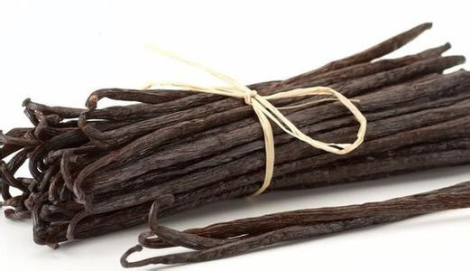
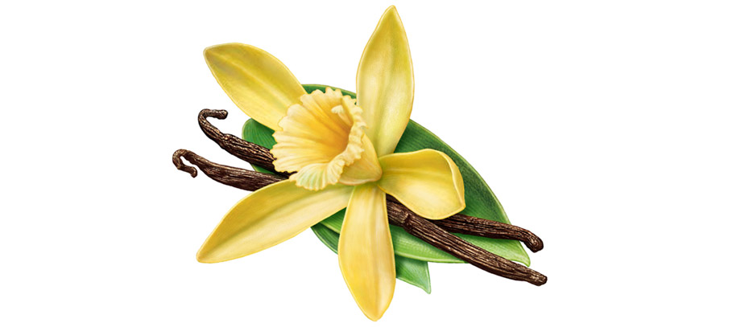
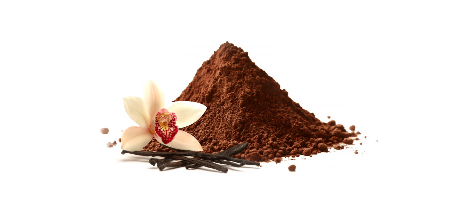

Vanilla (Bourbon)
Mada Overseas is a leading exporter and supplier of Bourbon Vanilla from Madagascar. Madagascar Bourbon Vanilla Beans are the world's most popular vanilla variety — rich, dark and creamy with an overwhelming sweet, buttery aroma.

Vanilla Products
Mada Overseas is a leading exporter of Bourbon Vanilla from Madagascar and Comoros — supplying worldwide markets all year round since 1983.

Madagascar Bourbon Vanilla Beans have a flavour and aroma profile unlike any other variety. Processed using the traditional Bourbon curing method — rich, dark, creamy and sweet with a buttery aroma. No breaks or splits in the beans, an indication of extremely high quality. Available in bulk.
- Curing MethodBourbon
- FlavourRich, Dark, Creamy and Sweet
- AromaButtery
- Moisture Content32% – 33%
- OriginMadagascar & Comoros

Bourbon natural vanilla powder produced from vanilla beans containing their full aroma. Ideal for food manufacturers, confectionery, bakeries, and beverage producers requiring consistent vanilla flavour.
- Moisture Content5% – 10%
- Particle Size0.3 – 0.4 mm
- OriginMadagascar & Comoros
Interested in Madagascar Bourbon Vanilla?
Contact us for pricing, minimum order quantities, and packaging options.